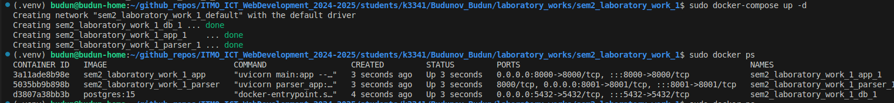
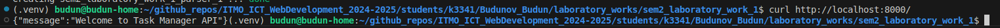
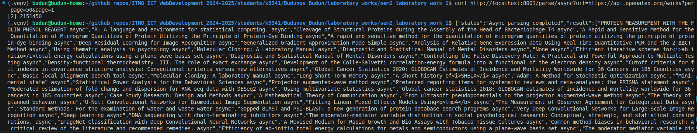
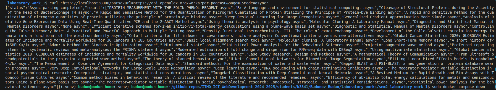
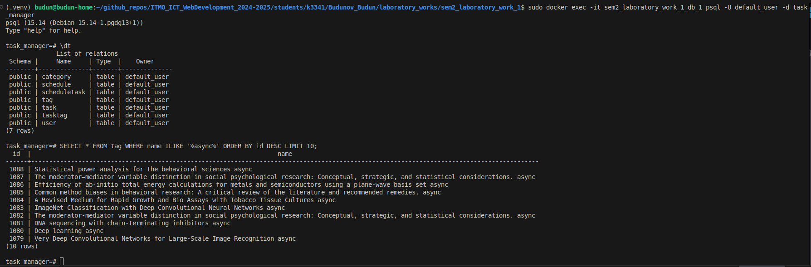

Отчет по лабораторной работе №3: Упаковка и интеграция FastAPI приложения с парсером данных в Docker
Введение
В рамках лабораторной работы были выполнены две подзадачи: упаковка FastAPI приложения, базы данных PostgreSQL и парсера данных в Docker (подзадача 1) и добавление endpoint в FastAPI для вызова парсера из отдельного контейнера (подзадача 2).
Основные файлы проекта:
main.py: Основное FastAPI приложение для управления задачами.parser_app.py: FastAPI приложение для парсера.task_async.py,task_threading.py,task_multiprocessing.py: Модули для парсинга в асинхронном, многопоточном и мультипроцессном режимах.parse_functions.py: Функции для парсинга и сохранения данных в базу.database.py,models.py,schemas.py,security.py,functions.py: Вспомогательные модули для работы с базой данных и авторизацией.Dockerfile: Конфигурация для сборки Docker-образа.docker-compose.yml: Конфигурация для оркестрации сервисов.requirements.txt: Зависимости проекта.
Подзадача 1: Упаковка FastAPI приложения, базы данных и парсера данных в Docker
1.1. Конфигурация Dockerfile
Dockerfile определяет базовый образ, устанавливает зависимости и копирует файлы приложения.
FROM python:3.10-slim
RUN apt-get update && apt-get install -y \
build-essential \
&& rm -rf /var/lib/apt/lists/*
WORKDIR /app
RUN pip install --upgrade pip
COPY requirements.txt .
RUN pip install --no-cache-dir -r requirements.txt
COPY main.py .
COPY database.py .
COPY models.py .
COPY schemas.py .
COPY security.py .
COPY functions.py .
COPY parse_functions.py .
COPY parser_app.py .
COPY task_async.py .
COPY task_threading.py .
COPY task_multiprocessing.py .
EXPOSE 8000
CMD ["uvicorn", "main:app", "--host", "0.0.0.0", "--port", "8000"]
1.2. Конфигурация docker-compose.yml
docker-compose.yml определяет три сервиса: db (PostgreSQL), app (основное FastAPI приложение), и parser (FastAPI приложение для парсинга).
version: '3.8'
services:
db:
image: postgres:15
restart: always
environment:
POSTGRES_DB: task_manager
POSTGRES_USER: default_user
POSTGRES_PASSWORD: default
ports:
- "5432:5432"
volumes:
- db_data:/var/lib/postgresql/data
app:
build: .
restart: always
command: ["uvicorn", "main:app", "--host", "0.0.0.0", "--port", "8000"]
ports:
- "8000:8000"
depends_on:
- db
environment:
DATABASE_URL: postgresql://default_user:default@db:5432/task_manager
parser:
build: .
restart: always
command: ["uvicorn", "parser_app:app", "--host", "0.0.0.0", "--port", "8001"]
ports:
- "8001:8001"
depends_on:
- db
environment:
DATABASE_URL: postgresql://default_user:default@db:5432/task_manager
volumes:
db_data:
1.3. Ключевые команды
-
Сборка и запуск контейнеров:
sudo docker-compose build --no-cache sudo docker-compose up -d -
Проверка статуса контейнеров:
sudo docker ps
-
Проверка работы
appсервиса:curl http://localhost:8000/
-
Проверка работы
parserсервиса:curl http://localhost:8001/parse/async?url=https://api.openalex.org/works?per-page=50&page=1
1.4. Результаты
После выполнения вышеуказанных шагов:
- Все контейнеры успешно запущены.
- Основное приложение (app) доступно на http://localhost:8000.
- Парсер (parser) доступен на http://localhost:8001.
- База данных PostgreSQL сохраняет данные (теги), добавленные парсером.
Подзадача 2: Вызов парсера из FastAPI
2.1. Код parser_app.py
from fastapi import FastAPI
from task_async import task_2 as async_parse
from task_threading import task_2 as threading_parse
from task_multiprocessing import task_2 as multiprocessing_parse
app = FastAPI()
@app.get("/parse/{mode}")
async def run_parser(mode: str, url: str):
if mode == "async":
result = await async_parse(url)
return {"status": "Async parsing completed", "result": result}
elif mode == "threading":
result = threading_parse(url)
return {"status": "Threading parsing completed", "result": result}
elif mode == "multiprocessing":
result = multiprocessing_parse(url)
return {"status": "Multiprocessing parsing completed", "result": result}
else:
return {"error": "Invalid mode. Use 'async', 'threading' or 'multiprocessing'"}
2.2. Обновление main.py
Добавлен endpoint /parse для вызова парсера:
from fastapi import FastAPI, HTTPException
import requests
app = FastAPI()
@app.get("/")
async def root():
return {"message": "Welcome to Task Manager API"}
@app.get("/parse")
async def parse_url(url: str, mode: str = "async"):
if mode not in ["async", "threading", "multiprocessing"]:
raise HTTPException(status_code=400, detail="Invalid mode. Use 'async', 'threading', or 'multiprocessing'")
try:
parser_url = f"http://parser:8001/parse/{mode}?url={url}"
response = requests.get(parser_url)
response.raise_for_status()
return response.json()
except requests.RequestException as e:
raise HTTPException(status_code=500, detail=f"Error calling parser service: {str(e)}")
- Тестирование endpoint:
curl "http://localhost:8000/parse?url=https://api.openalex.org/works?per-page=50&page=1&mode=async"
2.3. Результаты
- Endpoint
/parseвmain.pyуспешно вызываетparserсервис, передавая URL и режим парсинга. - Парсер обрабатывает URL, извлекает заголовки из JSON-ответа OpenAlex API, сохраняет их в базу данных с добавлением тега (e.g.,
async,threading,multiprocessing), и возвращает результаты клиенту.

Заключение
В результате выполнения лабораторной работы:
- Все сервисы (app, parser, db) успешно упакованы в Docker и работают стабильно.
- Реализован endpoint /parse в main.py, который позволяет клиенту отправлять URL для парсинга и получать результаты от parser сервиса.